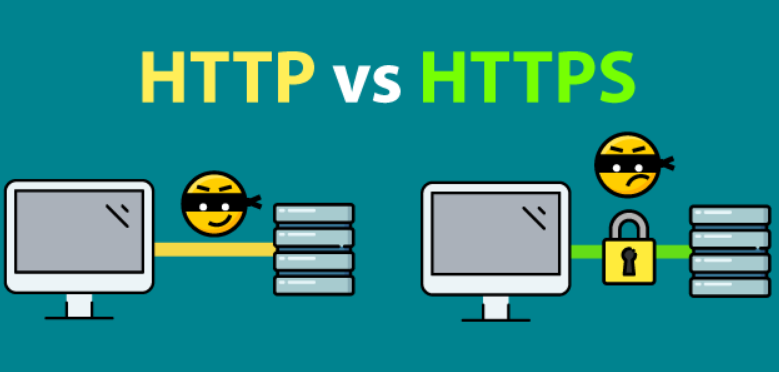

何謂http vs https

http: http是超文本傳輸協議信息是明文傳輸，若在http網站輸入帳號密碼容易被有心 人士窺探
https: HTTPS協議是由SSL+HTTP協議構建的可進行加密傳輸、身份認證的網絡協議 要比http協議安全
SSL的簡介：
SSL是Netscape公司所提出的安全保密協議，在瀏覽器(如Internet Explorer、Netscape Navigator)和Web伺服器(如Netscape的Netscape Enterprise Server、ColdFusion Server等等)之間構造安全通道來進行數據傳輸，SSL運行在TCP/IP層之上、應用層之下，為應用程式提供加密數據通道，它採用了RC4、MD5 以及RSA等加密算法，使用40 位的密鑰，適用於商業信息的加密。
同時，Netscape公司相應開發了HTTPS協議並內置於其瀏覽器中，HTTPS實際上就是SSL over HTTP，它使用默認埠443，而不是像HTTP那樣使用埠80來和TCP/IP進行通信。HTTPS協議使用SSL在發送方把原始數據進行加密，然 後在接受方進行解密，加密和解密需要發送方和接受方通過交換共知的密鑰來實現，因此，所傳送的數據不容易被網絡黑客截獲和解密。
(This information can be found on https://seopressor.com/blog/http-vs-https/
https://read01.com/PMxNxj.html)
何謂URL